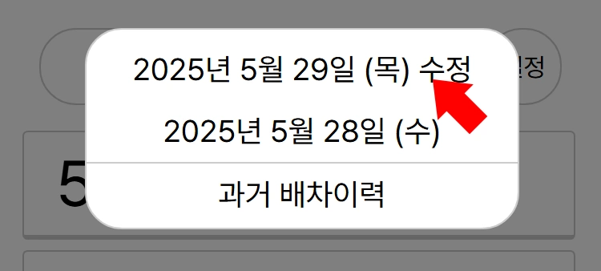
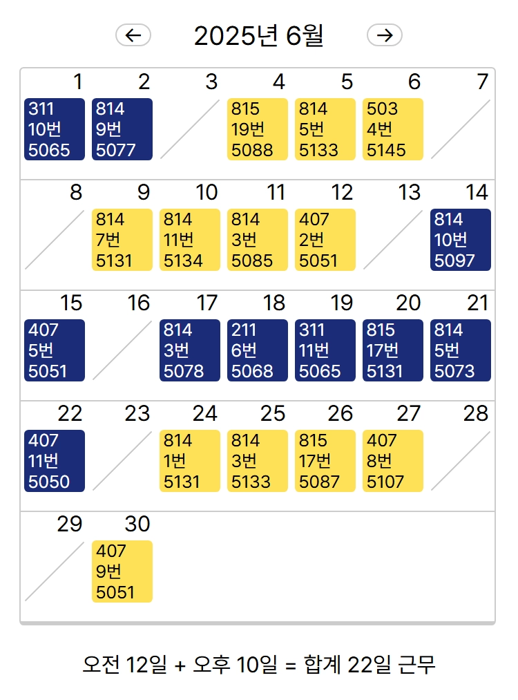

도움말
로그인

"배차" 버튼을 누르면 로그인 화면이 나타납니다. 인트라넷 아이디, 비밀번호를 입력하면 됩니다.
"설정→자동 로그인"이 활성화 된 경우, 로그인 과정이 생략됩니다.
배차 확인
로그인 한 다음에 원하는 일자를 선택하면 해당 일자 배차일지 데이터를 볼 수 있습니다. 데이터는 09:00~12:00 10분 간격, 이외 매시 정각 갱신됩니다.

화면 위쪽 검색창에 차량번호나 운전자 이름을 입력하면 해당 차량으로 화면이 이동되고 푸른색으로 표시됩니다. 5018호는 "18"이라고 써도 검색 가능합니다.

노선번호를 누르면 노선번호 목록이 표시되고, 특정 노선번호를 누르면 해당 위치로 화면이 이동됩니다.
특정 차량을 누르면 해당 차량에 대한 정보가 표시됩니다.
배차 정보는 자동으로 갱신되지만, 차종, 주차위치 등 차량 정보는 제때 갱신하지 못해 간혹 틀린 정보가 표시될 수도 있습니다.
과거 배차이력 확인
"과거 배차이력" 버튼을 누르면 한달 단위로 특정 운전자의 배차 기록을 확인할 수 있습니다.
노랑 배경은 오전 근무, 청색 배경은 오후 근무를 나타냅니다. "←", "→" 버튼을 통해 각각 이전 달, 다음 달로 페이지를 넘길 수 있습니다.